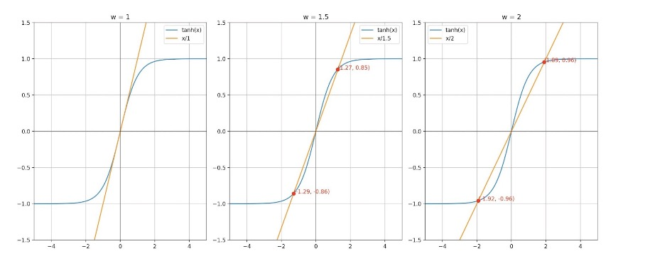
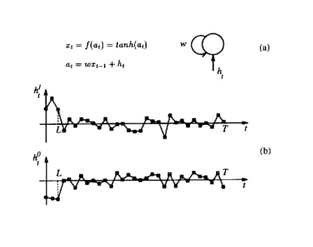
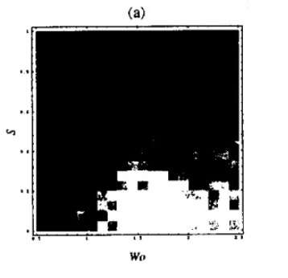
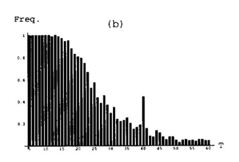
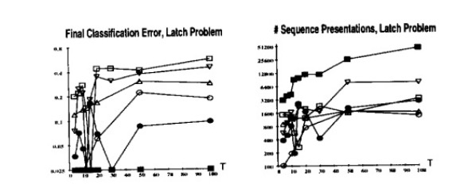
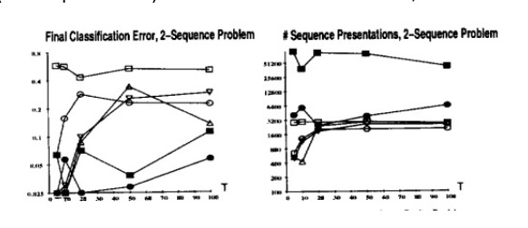
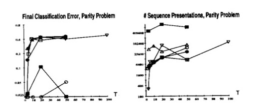

Learning Long-Term Dependencies with Gradient Descent is Difficult
Annotated by: Noah Schliesman
“To understand the living present, and the promise of the future, it is necessary to remember the past.” ~Rachel Carson
Abstract
The authors establish the problem of the vanishing gradient by breaking it into a problem of information latching and hyperbolic attractors. They then state that as gradient based learning struggles with long-term dependencies, there is a trade-off between latching onto information and robustness towards noise.[1]
Introduction
At their core, RNNs store and update context information using the backpropagation through time (BPTT) algorithm, a common online learning paradigm. This brings light to the difference between online learning and offline learning algorithms.
Online learning is when a neural net adjusts its weights after processing each training example, which incites the model to quickly adapt to new data. Online learning is also often referred to as stochastic or incremental learning and is advantageous in latency-critical applications.
Offline learning involves training the model using the entire dataset and the model updates its weights after seeing all the data in the batch over multiple epochs. Such a learning method assumes that the data distribution is static and can use batch gradient descent or mini-batch gradient descent as an optimizer.
Since BPTT is online, the authors follow this scheme in their analysis. They note the following conditions for success in learning long-term dependencies:
- The system should store information for a sufficiently long time \( t \)
- The system should be resistant to noise
- The system parameters should be trainable with respect to time \( t \)
This brings the notion of information latching, a concept the authors develop on the basis of hyperbolic attractors.
Minimal Task Illustrating the Problem
Let there be two classes of sequences of length \( T \). For each sequence \( u_1, \ldots, u_T \), the class \( C_{u_1, \ldots, u_T} \in \{0, 1\} \) depends only on the first \( L \) values,
\[ C_{u_1, \ldots, u_T} = C_{u_1, \ldots, u_L} \]
For a fixed \( L \) and \( T \gg L \), this problem represents the simplest test of latching onto information. To ensure this latching is robust, we assume \( u_t \) is zero-mean Gaussian noise. We can transmit gradient error information by tuning the initial inputs \( h_t \). Let,
- \( p \) be the pattern index over training sequences
- \( d_p \) be the target value (+0.8 for Class 1, -0.8 for Class 2)
- \( x_T^p \) be the latch output at time \( T \) for pattern \( p \)
The authors use mean squared error as the cost function such that,
\[ C = \frac{1}{2} \sum_p (x_T^p - d_p)^2 \]
Although this minimal task may seem trivial, learning \(\frac{\partial C}{\partial h_t}\) is the same regardless of whether you treat \( h_t \) as a parametric function (i.e., \( h_t(u_t, \theta) \)) or not. Thus, the challenge is propagating useful gradient information during training.
Simple Recurrent Network Candidate Solution
To extend beyond the simple latching system, the authors experimented on a single recurrent neuron with two classes ( \( k \in \{0, 1\} \) ). First, let’s establish the initial state for both classes as zero,
\[ a_0^0 = a_0^1 = 0 \]
From here, we can define our simple recurrent state \( a_t^k \) as a function of our weight parameter \( w \), the hidden state \( h_t^k \), and the activated previous recurrent state \( f(a_{t-1}^k) \). The authors use the hyperbolic tangent as their choice of activation (take careful note that the range is -1, 1),
\[ x_t^k = f(a_t^k) = \tanh(a_t^k) \]
\[ a_t^k = w f(a_{t-1}^k) + h_t^k \]
They then provide an analysis of the temporal dynamics using hyperbolic attractors. An attractor is the space from which trajectories evolve after a long enough time. In our case, we are interested in hyperbolic attractors—of which the system behavior for every point on the attractor splits into two subspaces. In one direction (the stable manifold \( E_s \)), if the system starts near the attractor, it gets pulled in over time. In the other (unstable manifold \( E_w \)), small differences can cause very different outcomes. Such a system provides insight into the stability and predictability of complex systems.[2]
By definition, an attractor occurs where the output of the system remains constant over time. For a linear transformation of input \( a \) based on weight \( w \), we look for points where that linear transformation is equal to its activation,
\[ f(a) = aw \] or more precisely, \[ \tanh(a) = aw \]
The authors note that weight \( w \) must be greater than the reciprocal of the activation function derivative at 0 to ensure two distinct non-zero attractors,
\[ w > \frac{1}{f'(0)} \]
For \( f(0) = \tanh(0) \), \( f'(0) = 1 - \tanh^2(0) = 1 \), \(\therefore f'(0) = 1\) and \( w > 1 \).
When we plot such a system, we obtain the two distinct attractors for \( w > 1 \),

From here, the authors assume that the initial state is \( x_0 = -x \). For a threshold value \( h^* > 0 \), the system will remain near the attractor \( x_0 \) as long as the magnitude of \( h_t \) is below the threshold \( h^* \), ensuring the stability of the system around the attractor,
\[ |h_t| < h^* \]
Intuitively, if the hidden state \( h_t \) exceeds the threshold \( h^* \) consistently for a certain number of steps \( L_1 \), the system will transition to the positive attractor \( x \) by time step \( L_1 \). This means that there exists a finite number of steps \( L_1 \) such that the state \( x_{L1} \) of the system is greater than the attractor,
\[ x_{L1} > x \ \text{iff} \ h_t > h^* \ \forall t \leq L1 \]
Similarly, the authors consider the symmetric case where the initial state is \( x_0 = x \). In this case,
\[ x_{L1} < -x \ \text{iff} \ h_t > -h^* \ \forall t \leq L1 \]
Consider the case in which the threshold \( h^* \) increases with weight \( w \). Thus, larger weights allow the system to tolerate larger hidden state deviations before switching attractors. Conversely, the transient length \( L_1 \) (time it takes the system to settle to a new attractor) decreases when \( |h_t| \) increases. In other words, larger hidden state values lead to quicker transitions between attractors.
This is exactly why long-term gradient dependencies are difficult. We want robustness to noise and hidden state deviations, but there is a tradeoff which reduces the transient length \( L_1 \), leading to the model failing to capture long-term dependencies.

The recurrent weight \( w \) is also trainable and as mentioned produces two stable attractors for \( w > 1 \). Similarly, a larger weight \( w \) results in a larger critical value \( h^* \), leading to greater resistance to noise. To ensure the neuron’s state converges to an attractor, we set,
\[ h_t^1 \geq H \text{ and } h_t^2 \leq -H \text{ for } H > h^* \]
The authors then go into the experimental setup and process for training such a latching recurrent neuron. Two sample sequences are provided as input to the recurrent neuron. For time steps \( t \leq L \), the inputs \( h_t^k \) are trainable and set to small uniform random values and are trainable. After training (for time steps \( t > L \)), the inputs are drawn from a zero-mean Gaussian distribution with noise variance \( s \). They used BPTT to update weights based on error gradients over time.
The first experiment investigates the effect of noise variance \( s \) (vertical axis) and initial weight \( w_0 \) (horizontal axis). With the white areas being high density of convergence, we can see a clear stable region,

The second experiment measured the frequency of training convergence with respect to sequence length \( T \) with noise variance \( s = 0.2 \) and initial weight \( w_0 = 1.25 \). This is a test of the network’s ability to transmit error information backward while maintaining the ability to latch. As revealed through the hyperbolic attractor theoretical analysis above, the authors find difficulty in creating a system that converges well over long sequences while maintaining robustness to noise. Such a pattern is shown below,

Learning to Latch with Dynamical Systems
The authors choose to go one layer of abstraction higher by explaining the case of long-term dependencies in a parametric dynamical system. Consider a non-autonomous discrete-time system, where,
- M is a nonlinear map,
- a_t ∈ ℝⁿ is a vector representing the system state, and
- u_t ∈ ℝᵐ is a vector representing the external input at time t,
\[ a_t = M(a_{t-1}) + u_t \]
Such a system is non-autonomous because the evolution of the state a_t depends on the input u_t. Similarly, the autonomous dynamics can be described by simply dropping the external factor,
\[ a_t = M(a_{t-1}) = N(a_{t-1}, u_{t-1}) \]
The authors mention that additional state variables y_t can transform such a non-additive system (i.e. \( a_t = N(a_{t-1}, u_{t-1}) \)) into an additive system, creating an augmented state vector \( a_t' \),
\[ a_t' = (a_t, y_t) ∈ ℝ^{n+m} \]
The mapping N can be decomposed such that the augmented state vector a_t' changes due to a new map N' with an additive input. We can make an extended input vector u_t' such that the first n components are zero, and the remaining components correspond to the original input vector u_t. These zeroes ensure that the extended input vector u_t' only affects the original state variables a_t through the elements corresponding to the original input u_t,
\[ u_t' = (0, u_t) \]
Our augmented state vector can be rewritten now as an additive system,
\[ a_t' = N'(a'_{t-1}) + u_t' \]
In turn, we can also write our new map N' in terms of the old mapping N,
\[ N'(a'_{t-1}) = N(a_{t-1}, u_{t-1}, 0) \]
Analysis
To latch a bit of information, the system’s state \( a_t \) is restricted to a subset S of its domain. Thus, the state is either inside the set S or outside it. The region in the state space from which the system’s state will converge to the attractor is known as the basin of attraction. To ensure that \( a_t \) remains within S, the system’s dynamics are designed so that S is within the basin of attraction of an attractor. To erase a bit of information, inputs can be used to push the system’s state \( a_t \) out of the basin of attraction, possibly into another attractor’s basin (thereby changing the stored bit of information). Through six handy definitions for the basin of attraction of such a system, the authors prove that the sensitivity of the state \( a_t \) to the initial state \( a_0 \) ( \( \frac{\partial a_t}{\partial a_0} \) ) vanishes over long sequences.
Definition 1: “A set of points E is said to be invariant under a map M if \( E = M(E) \)”
Here, map M represents a function or rule that describes how points in the phase space of the system change with set E being a subset of the system’s phase space. In other words, applying the map M to every point in E results in a set of points that is still within E.
Definition 2: “A hyperbolic attractor is a set of points X invariant under the differentiable map M, such that for all \( a \in X \), all eigenvalues of \( M'(a) \) are less than 1 in absolute value”
The Jacobian of M at point a, \( M'(a) \), describes how small perturbations around a change under M and therefore indicate the stability of the system at that point. We are particularly interested in the eigenvalues because they indicate the growth rate of perturbations in the scaling directions (eigenvectors).
If the eigenvalues have a magnitude less than one, the system exhibits contraction towards the attractor. The set of points that converge to this attractor under M forms the stable manifold.
Conversely, if the eigenvalues have a magnitude greater than one, the system exhibits expansion from the attractor. The set of points that diverge from this attractor under M forms the unstable manifold.
In the case where the eigenvalue of the Jacobian map is equal to 1, the corresponding points do not contract or expand and are said to be in the center manifold (neutral stability).
The authors also explain that an attractor that consists of a single point is called a fixed point attractor (i.e. \( M(a) = a \)).
A periodic attractor consists of a finite number of points that the system cycles through periodically (i.e. \( M^l(a) = a \) for some period l).
A chaotic attractor consists of an infinite number of points and is characterized by their initial conditions.
Recall the general form of a recurrent network structure with weight matrix W and external input \( u_t \),
\[ a_t = W \tanh(a_{t-1}) + u_t \]
The nature of the attractors in the network depends heavily on the weight matrix W. If W is symmetric and its minimum eigenvalue is greater than -1, the system has fixed point attractors. If the absolute value of all the eigenvalues of W is less than 1, the system has a single fixed point attractor at the origin. In this latching mechanism, it is beneficial to have multiple fixed point attractors (i.e. ensure the weight matrix W is symmetric and its minimum eigenvalue is greater than -1).
Definition 3: “The basin of attraction of an attractor X is the set β(X) of points converging to X under the map M”
In other words, the basin of attraction is the set of all initial conditions in the phase space that lead to trajectories converging to X under the dynamics defined by the map M. Similarly, the stable manifold is contained within the basin of attraction and provides the points that converge to the attractor along stable eigenvalue directions. Formally, let,
- \( a \) be the initial condition in the phase space
- \( X \) be the set of points that constitute the attractor
- \( M^l(a) \) be the map defining the dynamics of the system from condition a, l times
- \( ||\cdot|| \) be the Euclidean norm measuring the distance between points
For an arbitrarily small positive distance \( \epsilon > 0 \), there exists a time step \( l \) and a point \( x \in X \) such that the distance between the state \( M^l(a) \) and the point x is less than \( \epsilon \). Starting from any initial condition a in the basin, the trajectory will get arbitrarily close to some point x in the attractor X after a finite number of iterations l,
\[ β(X) = \{ a: \forall \epsilon, \exists l, \exists x \in X \text{ such that } ||M^l(a) - x|| < \epsilon \} \]
Definition 4: “We call \( Γ(X) \), the reduced attracting set of a hyperbolic attractor X, the set of points \( y \) in the basin of attraction of X, such that for all \( l \geq 1 \), all the eigenvalues of \( M^l'(y) \) are less than 1”
Such a reduced attracting set is more restrictive than the stable manifold and only includes points where the linearized dynamics around point y ensure uniform contraction in a uniformly stable manner.
Definition 5: “A system is robustly latched at time \( t_0 \) to X, one of several hyperbolic attractors, if \( a_{t0} \) is in the reduced attracting set of X under a map M defining the autonomous system dynamics”
As mentioned in the original RNN task, we want the system to latch onto an attractor despite the presence of noise. Intuitively, we want this latching to be defined by a uniform contraction to such an attractor through the stability of eigenvalues.
As revealed by a slightly involved triangle inequality proof shown in theorem 1, if the initial condition in the phase space is in the basin of attraction but not in the reduced attracting set, the size of a ball of uncertainty around \( a_0 \) grows exponentially as t increases, leading to a lack of input noise robustness.
Definition 6 deals with the definition of a map contracting on a set and justifies the definition of latching. Theorem 4 results from definitions 4 and 2 and shows that,
\[ \frac{\partial a_t}{\partial a_0} \rightarrow 0 \text{ as } t \rightarrow \infty \]
Many of these definitions and formalizations are essentially stating the same core idea: we cannot have a noise-resistance system (reasonably small ball of uncertainty) that can maintain long-term dependencies (convergence to correct attractor).
Effect on the Weight Gradient
It's time to take a look at this problem from the perspective of the weight gradient. We generally aim to minimize the cost with respect to our weights. This can in turn be expanded using the chain rule first for some time \( t \) and some time \( t' \),
\[ \frac{\partial C_t}{\partial W} = \sum_{t'} \frac{\partial C_t}{\partial a_{t'}} \frac{\partial a_{t'}}{\partial a_t} \frac{\partial a_t}{\partial W} \]
In other words, older inputs contribute very little to the gradient because the partial derivative of the cost with respect to past activations becomes very small and the network is more responsive to recent inputs.
Alternative Approaches
The authors explain that gradient-based methods are not enough for non-smooth cost functions and long plateaus in the optimization space. They mention that using prior knowledge to set the network’s connectivity, initial weights, and constraints can relieve this issue.
Simulated Annealing
The authors consider simulated annealing to find the global minimum. In this context, they use batch learning to refer to the algorithm updating parameters after all examples of the training set have been seen (as an alternative to online learning). They also mention using random moves in each parameter direction and rejecting such moves based on the Metropolis criterion to escape local minima. New parameter values are selected according to a uniform distribution within a hyperrectangle that is adjusted to keep the acceptance rate of moves about half of the total moves.
The temperature controls the likelihood of accepting worse solutions as it searches for the global minimum. After some cycles, the temperature is reduced to accept better solutions over time (echoing the idea of cooling down). Training stops when the ideal cost is attained, if learning gets stuck, or if a maximum number of evaluations is reached.
Multi-Grid Random Search
Multi-grid random search deals with the issue of plateaus (regions in the parameter space where the gradient is very small). Instead of accepting worse solutions, this form of search performs a uniform random search in a hyperrectangle about the best point, finds a new best point, reduces the size of the hyperrectangle by 0.9, and recenters it around the new point. Similarly to that of simulated annealing, training stops when the ideal cost is attained, if learning gets stuck, or if a maximum number of evaluations is reached.
Time-Weighted Pseudo-Newton Optimization
This approach scales the learning rate of each weight to dynamically match the curvature of the energy function with respect to that weight. By rescaling these learning rates, the algorithm attempts to avoid the vanishing gradient problem. Let,
- \( \alpha \) be a small positive constant that controls the learning rate scale
- \( \epsilon \) be a small positive constant that prevents division by zero
The update function \( w_i^p \) takes into account the Jacobian and Hessian of the cost function with respect to each weight,
\[ w_i^p = -\frac{\partial^2 C_p}{\partial w_i^2} + \frac{\partial C_p}{\partial w_i} \]
The Hessian serves as a normalizing factor for the curvature of the parameter space, which can in turn help accelerate learning. The authors note that such an algorithm outperforms back-propagation but still fails to robustly address the vanishing gradient problem.
The authors then extend this idea to a time-weighted algorithm, which considers each instantiation of weight \( w_i \) at different time steps as a separate variable. The algorithm uses a diagonal approximation of the Hessian to keep computations efficient. They use a global learning rate \( \alpha \) of 0.01, and a clipping constant \( \epsilon \) of 0.001 to 0.3, with a momentum term of 0.8 attached to the clipping constant. This extension is formulated as,
\[ w_i^p = -t \frac{\partial^2 C_p}{\partial w_{i,t}^2} + \frac{\partial C_p}{\partial w_{i,t}} \]
Here, the summation arises because these variables are constrained to be equal since they represent the same underlying weight across different times.
Discrete Error Propagation
The authors note information retention leads to a state where network activations do not change and the gradient diminishes, especially when the network stays in the same state for several time steps. They in turn propose a non-differentiable function to propagate discrete error information and ideally propagate error backward in time.
They summarize some of the previous approaches to non-differentiable error propagation: One method mentions using a probabilistic approach which can be handled by stochastic gradient descent. Another method proposes adjusting the unit activations and then training the parameters to produce the network’s internal representation. They also mention searching the space of activities of hidden units in a greedy search to reduce output error. An earlier algorithm proposes propagating target values instead of errors.
After considering these approaches, the authors decide to propagate discrete errors using a finite difference approach, which approximates derivatives by considering small changes in inputs and observing the output changes.
Consider a simple discrete threshold function with input \( x_i \) and output \( y_i(x) \in \{-1, 1\} \),
\[ y_i(x) = \text{sign}(x_i) \]
To backpropagate an error signal, we can consider how the input changes \( x_i \) affect the output changes \( y_i \). If our input was negative and our update becomes positive, the change is +2. If our input was positive and our update becomes negative, the change is -2. Intuitively,
\[ y_i = \begin{cases} 0 & \text{otherwise} \\ -2 & x_i < 0 \text{ and } x_i + \Delta x_i > 0 \\ 2 & x_i > 0 \text{ and } x_i + \Delta x_i < 0 \\ \end{cases} \]
Suppose we want to cause a specific output change \( y_i \). For a positive constant \( \lambda \), we have the following as a result of the previous formula,
\[ \Delta x_i = \begin{cases} 0 & \text{otherwise} \\ -\lambda - x_i & y_i = -2 \\ -x_i & y_i = 2 \\ \end{cases} \]
The authors can in turn calculate a pseudo-gradient,
\[ C'_{x_i} = \frac{1}{\Delta x_i} y_i \text{ s.t. } y_i \neq 0 \]
To handle the discrete nature of such an output change, the authors define a continuous variable \( g_i \) that relates to the error signal to be propagated,
\[ \text{MIN} \leq g_i \leq \text{MAX} \]
A stochastic function \( S(g_i) \) is defined to map the continuous variable to the discrete set \{-2, 2\},
\[ P(S(g_i) = 2) = \frac{g_i - \text{MIN}}{\text{MAX} - \text{MIN}} \]
\[ P(S(g_i) = -2) = \frac{\text{MAX} - g_i}{\text{MAX} - \text{MIN}} \]
Non-linear threshold units can be combined with other differentiable components. When a non-linear threshold unit is connected to itself, two stable fixed points are induced. The pseudo-gradient approximates gradient information and does not vanish along the self-loop. While this is not optimal, it is certainly a step in the right direction of thought. The authors mention the possibility of a trainable discrete flip-flop unit in mitigating the vanishing gradient.
Experimental Results
The authors note that training on shorter sequences can be helpful in capturing short-term dependencies, but many tasks limit such availability to shorter sequences. They induce uniformly distributed noise in the range -0.2, 0.2 to assess the robustness of the algorithm. Additionally, the length of the input/output sequences varied. They used average classification error and average number of function evaluations as performance metrics.
Network parameters were initialized uniformly between -0.5 and 0.5. For each trial, a training set whose length was uniformly distributed between \( \frac{T}{2} \) and \( T \), where T is the maximum sequence length.
The first task was that of the latch problem, which involved a network learning to latch onto input values based on the initial input. The network had only one unit, with self-loop weight w, positive initial input u1, and negative initial input u2.

The authors also tested the 2-sequence problem, where the network must classify a noisy input sequence as one of two sequences after being given the first N elements of the sequence. They used a fully connected RNN with five units and no biases, except one unit with an external additive input (25 free parameters).

Lastly, the authors tested the parity problem, of which the goal was to determine the parity (odd/even number of ones) of an input sequence of 1’s and -1’s (output of 1 if there is an odd parity). The minimal size network implemented had 7 free parameters and 2 units connected to one hidden unit and one output unit.

In these results, the square is standard backpropagation, the nabla is pseudo-Newton, the triangle is the time-weighted pseudo-Newton, the circle is discrete error propagation, the dot is multi-grid random search.
Simulated annealing performed well across all problems, but took significantly more training time and struggled with sequence length in the Latch problem. Discrete error propagation performed reasonably well and was faster than simulated annealing and multi-grid random search. Pseudo-Newton back-propagation outperformed standard back-propagation, but struggled as the temporal span of dependencies increased. Lastly, the time-weighted pseudo-newton algorithm outperformed the other two variants of backpropagation.
Conclusion
In this paper, the authors formalize the problem of the vanishing gradient to that of hyperbolic attractors and conclude that there is a trade-off between noise resistance and long-term context. To address this, they propose several other error propagation methods including the time-weighted pseudo-Newton method and discrete error propagation algorithm. This paper largely incentivized future endeavors in long-term context such as the LSTM, GRU, and modern attention-based mechanisms.
References
- [1] Bengio, Y., Simard, P., & Frasconi, P. (1994). Learning long-term dependencies with gradient descent is difficult. IEEE Transactions on Neural Networks, 5(2), 157-166.
- [2] Todd Fisher (2008) Uniformly hyperbolic attractors. Scholarpedia, 3(4):5625.